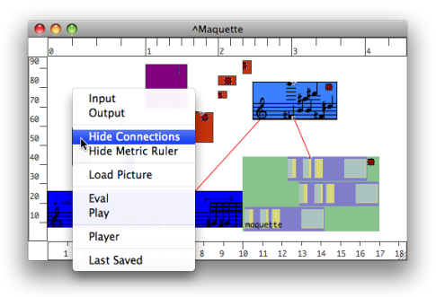

OpenMusic DocumentationHiérarchie de section : OM 6.6 User Manual > Maquettes > Maquette Programming > Functional Components
OpenMusic DocumentationHiérarchie de section : OM 6.6 User Manual > Maquettes > Maquette Programming > Functional Components
Navigation : page précédente | page suivante
Attention, votre navigateur ne supporte pas le javascript ou celui-ci à été désactivé. Certaines fonctionnalités de ce guide sont restreintes.
Using TemporalBoxes as Functional Components : Inputs and Outputs
Data can be sent from and to TemporalBoxes via standard functional inputs and outputs. These allow to assign input values to TemporalBoxes and create connections between objects in the maquette. They are represented on the outside of TemporalBoxes by small  / chips.
/ chips.
To display or hide connections :
-
Ctrl/ right click in the maquette - choose
Show / Hide Connections.

Patches Inputs and Outputs
To add inputs and outputs to a TemporalBox, follow the usual procedure.
Double click on the TemporalBox to open it.
Click on the blue
 and green arrow icons to add inputs and outputs from the inside of patch.
and green arrow icons to add inputs and outputs from the inside of patch.Inputs and outputs appear on the outside of the TemporalBox.
Note that, as in any patch, inputs and outputs are represented by the same arrow icons, and are connected exactly the same way to the boxes of the patch editor.

Maquette Inputs and Outputs
Adding Inputs and Outputs
| Maquettes are also programs : they can be added a number of inputs and outputs. |
In particular, this makes it possible to organize data transfers between temporal boxes into a hierarchy of maquettes. To add an input or output in a maquette :
|
Edition
Maquette inputs and outputs can be edited like patch inputs, via their editor. |
Editing Input Boxes
Instances and Global Variables
Default Output
When an instance , factory box or global variable is dropped into a maquette, a default output is automatically added in the corresponding Temporalbox. |

|
No Inputs

|
Instances are programs that always produce the same object. Consequently,TemporalBoxes refering to instances don't have any inputs, but a single output that returns the value of the object they produce. |
Références :
Plan :
Navigation : page précédente | page suivante
A propos...(c) Ircam - Centre Pompidou